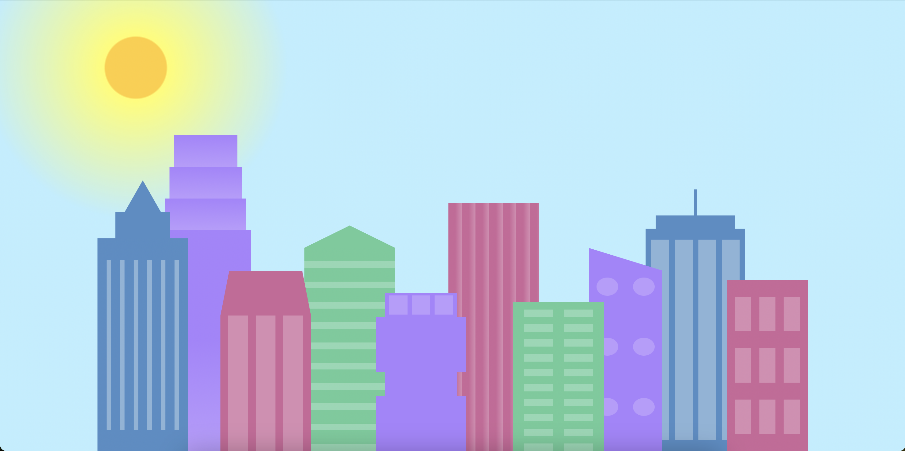

Projects
Buildings in the Day and Night

Description: Image of buildings that change in colour and background from day to night and vice versa when the size of the browser window changes. Made using HTML and CSS.
View ProjectRestaurant Menu

Description: Website for a fictional rock diner that showcases the menu and order form. Made using HTML and CSS.
View ProjectRock Paper Scissors Lizard Spock

Description: Extended version of Rock Paper Scissors playable on the terminal. Made using Python and if, elif, else statements.
View ProjectDiscord MemeBot


Description: Discord bot that sends a random meme when the user types $meme. Made using Python on VS Code.